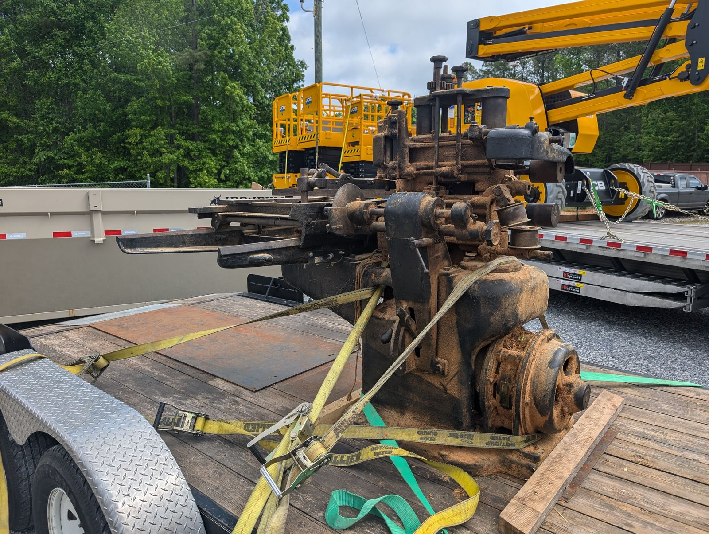
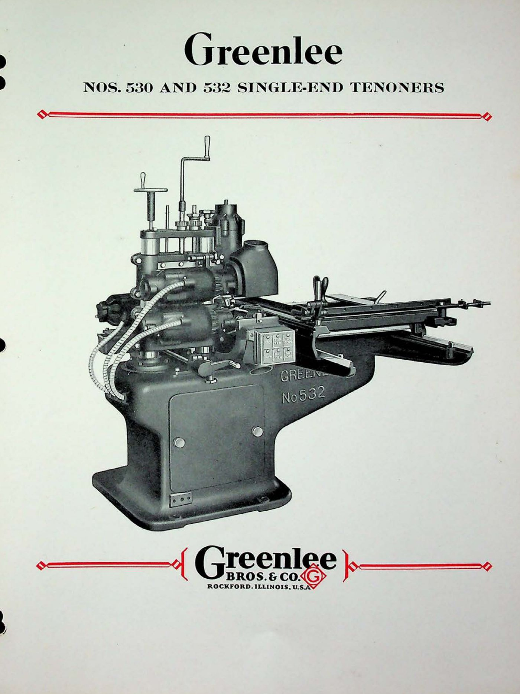
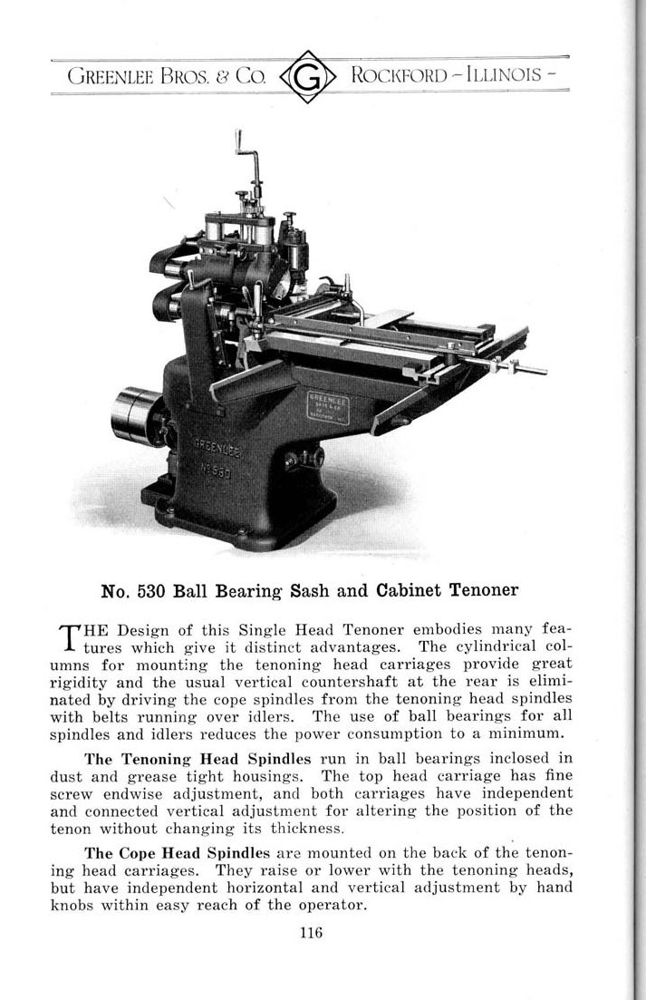
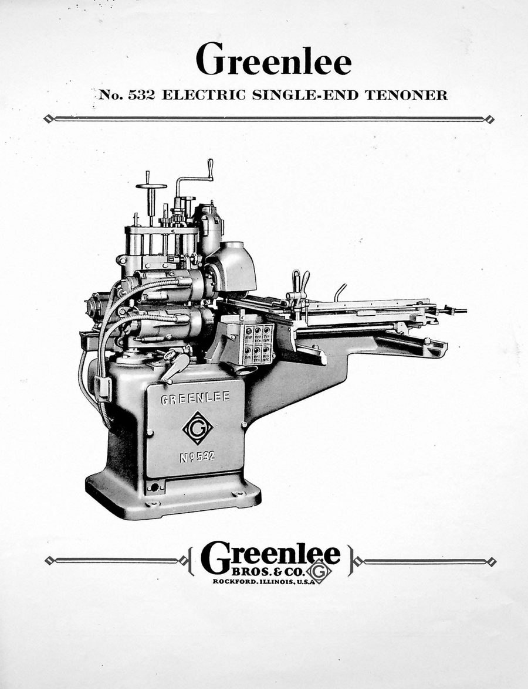
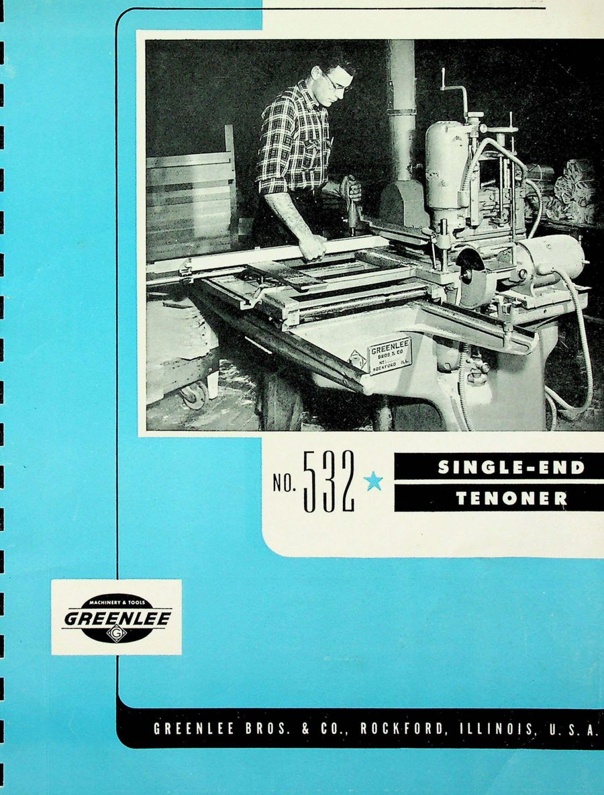

No. 530 Single-End Tenoner
Tenons for structural timber joinery · 500-Series · February 1921

The machine
If the mortise is the slot, the tenon is the tongue — and a tenoner is the machine that cuts it to fit. The work is clamped to a rolling carriage and fed past a set of cutterheads that take both cheeks and both shoulders in a single pass, leaving a tenon that is square, centered, and identical to the last hundred it cut. Single-end means one end of the workpiece per pass; the double-end versions that did both at once were the length of a small truck.
The 500-Series were Greenlee’s tenoners, and the 530 was built for heavy work — the structural joinery of sash, door, and timber construction, where the tenon carries real load.
The one in this collection
Serial 32205 was built in February 1921, into the building boom that followed the First World War. It came into the collection the way most of these machines do — found, bought, strapped to a trailer, and hauled home behind a pickup, several thousand pounds of Rockford iron riding on good straps and optimism. The photograph above is that day.
From the Catalog

“Except for the method of drive, these single-end tenoners are of the same general design… The No. 530 has belt-driven spindles… while the No. 532 is a full electric machine, entirely without belts.” Greenlee Bulletin Nos. 530-532 · general-line catalog, 1930s
The plate shows the electric-drive No. 532; the No. 530 shares the casting and design, driven by belts.
Catalog scan courtesy of VintageMachinery.org.
Through the Catalogs
The single-end tenoner line, from belt drive to full electric.



Every frame links to the full publication in the Paper Archive — scans courtesy of VintageMachinery.org.